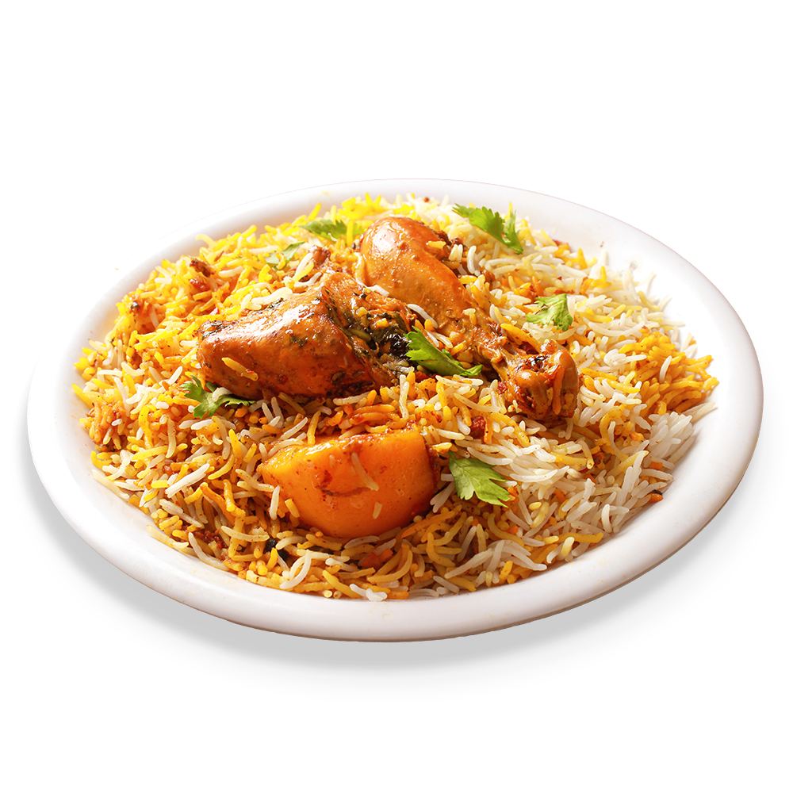

CHICKEN BIRYANI:
-
The Biryani With One Thousand Faces
While all varieties of biryani are important, a few are more popular than others. Lucknowi biryani falls under the Awadhi style of cooking (Awadhs were a branch of Mughals). This variety of biryani is fragrant but the flavors are subtle and nuanced.
The Kolkata style of biryani belongs to West Bengal and was learnt from the Muslim royals around 1856, when the last Nawab of Oudh, Wajid Ali Shah, was dethroned by the British and exiled to Kolkata during the reign of Queen Victoria. What separates it from the original Mughal biryani is the addition of potatoes. This is to say that each region in India has its own “signature” biryani.
This biryani is a simple chicken-based version that I learned and adapted from an Indian Muslim friend. While it has the richness of Indian spices, it isn’t as subtle as the Lucknowi variety, nor is it as robust as the South Indian version. You’ll find your sweet spot with my versatile chicken biryani.
Tips for Making Chicken Biryani
Serve it layered — Do not mix up the rice with chicken while serving, simply serve it in a layered form.
Where to find biryani masala — Biryani masala can be found at most Indian markets. Some blends contain salt. If so, omit the additional salt from the chicken marinade.
What kind of chilli powder to use — For the red chilli powder, look for an Indian red chilli powder (they are often simply labeled “red chilli powder” in Indian markets). In a pinch, unsmoked paprika can be used. Do not use American-style chili powder (the blend of spices used in making American meat and bean chili). Keep in mind that red chilli powders can vary a lot in heat level, so taste a smidge by itself to see how spicy it is, and adjust the amount used in the recipe accordingly.
Cooking the rice — After par-cooking the rice, it should still have a little bite to it. It will finish steaming with the chicken and during that time will pick up the fragrant aroma of the spices the chicken was cooked with.
Ingredients
4 boneless skinless chicken thighs (1 1/4 to 1 1/2 pounds), cut into 1-inch cubes
3/4 cup plain yogurt
2 tablespoons ginger-garlic paste, or 1 tablespoon minced fresh ginger plus 1 tablespoon minced garlic
2 tablespoons fresh lemon juice (from 1 lemon)
1 1/2 tablespoons biryani masala, preferably salt-free
1 tablespoon ground coriander
1 tablespoon ground cumin
1/2 to 1 teaspoon red chilli powder, depending on your spice tolerance
1 green chilli, such as serrano, minced
1/2 teaspoon ground turmeric
1 1/2 teaspoons fine salt, divided
1 pinch saffron threads
5 tablespoons milk
2 cups basmati rice
2 tablespoons ghee
2 teaspoons cumin seeds
2 bay leaves
8 peppercorns
1 (2-inch) cinnamon stick
1/2 cup French-fried onions, or store-bought fried shallots, divided
1 Roma tomato, grated
1 tablespoon garam masala, store-bought or homemade
1/4 cup cilantro leaves, finely chopped
1/3 cup mint leaves, finely chopped
Back to Home Page